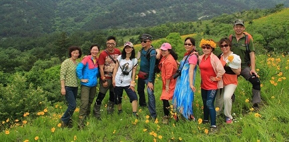

武汉农圣沉湖生态农庄
武汉农圣沉湖生态农庄位于蔡甸区消泗乡，与国家级保护区沉湖湿地相邻，空气清新，环境优美，0污染！
武汉农圣沉湖生态农庄有限公司
手机: 13995556773
免费服务热线: 400-968-2686
农圣沉湖原生态食材
QQ群: 296251895
地址: 武汉市蔡甸区消泗乡

好的企业文化才能让企业更健康的发张，农圣沉湖生态农庄一直致力于培养一个好的企业文化。我们努力营造良好的公司环境，让员工更好的融入进来，愉快的生活工作，如同家一般的温暖。公司节假日经常会组织职员外出游玩，缓解疲劳，放松心情。
农圣一直把客户放在第一位，客户的要求就是我们的追求。农圣生产的水果蔬菜都是精心栽培的有机产品，无污染，营养丰富。农圣尽最大的努力，给你舌尖上最纯正的美味。